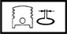

COMPRESSION SEALS
- Path
- Technical Data > Manufacturing data > 10 ENGINE > 1028 PISTONS AND CONNECTING RODS > COMPRESSION SEALS
- Kind
- technical data / specifications
- Applies to
- all engines; all production periods
- Interactive page
- https://sloeber94.github.io/elrnDB-aGt/en/#/2921831
Applies to: all engines; all production periods
Piston ring gap (mm) | Validity |  | ||
|---|---|---|---|---|
1˚ ring | 2˚ seal | |||
0.25 ÷ 0.50 | 0.25 ÷ 0.50 | 2.0 JTS | ||
Seal end float (mm) | Validity | |||
1˚ ring | 2˚ seal | |||
0.030 ÷ 0.070 | 0.020 ÷ 0.055 | 2.0 JTS | ||
Thickness of piston rings (mm) | Validity |  | ||
1˚ ring | 2˚ seal | |||
1.19 | 1.5 | 2.0 JTS | ||
Endfloat, 2˚ ring (mm) | Validity | |||
|---|---|---|---|---|
0.050 ÷ 0.090 | 1.9 JTD 16V | |||
Opening (mm) | Validity | |||
1˚ seal | 2˚ seal | |||
0.20 ÷ 0.35 | - | 1.9 JTD 16V | ||
Piston ring gap (mm) | Validity | |||
|---|---|---|---|---|
1˚ ring | 2˚ seal | |||
0.30 ÷ 0.50 | 0.40 ÷ 0.60 | 3.2 V6 | ||
Seal end float (mm) | Validity | |||
1˚ ring | 2˚ seal | |||
0.035 ÷ 0.070 | 0.030 ÷ 0.075 | 3.2 V6 | ||